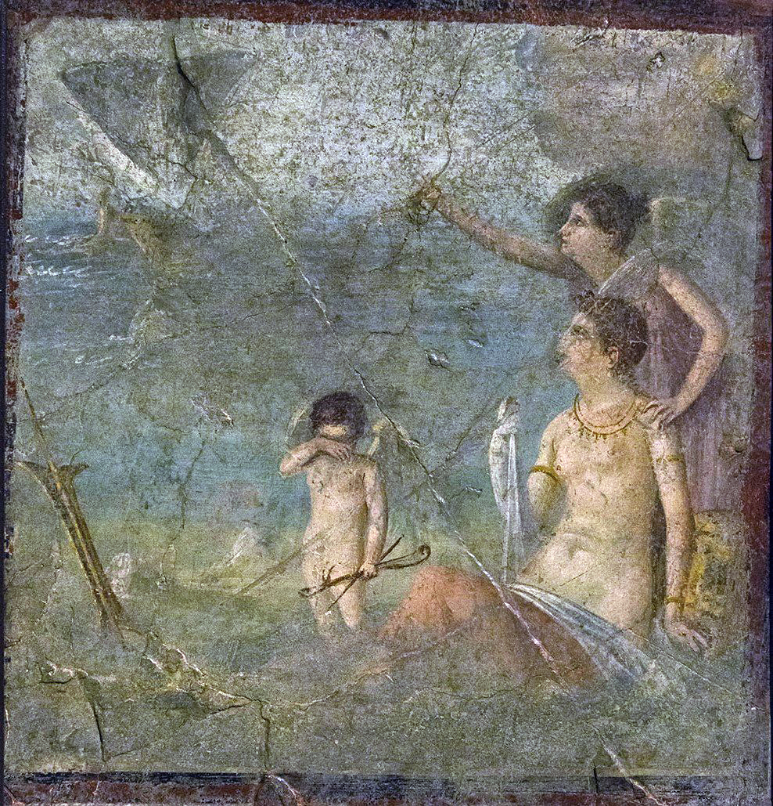
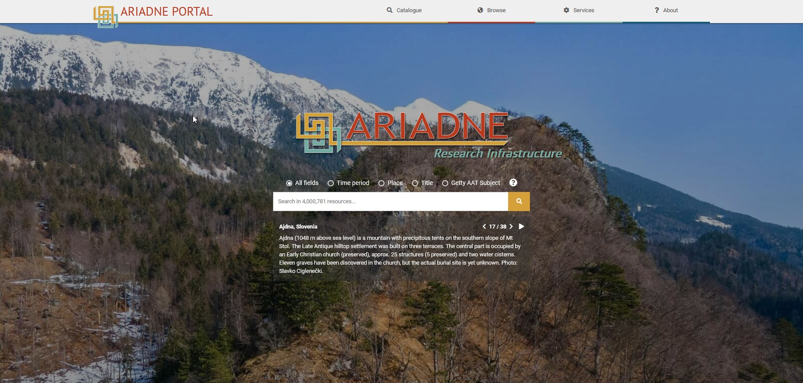
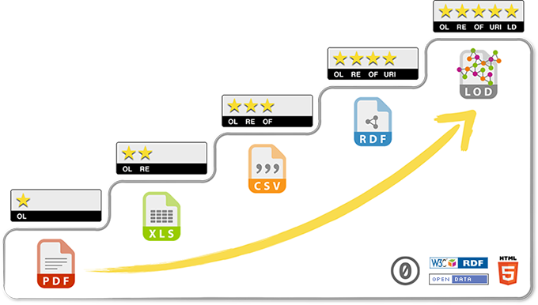
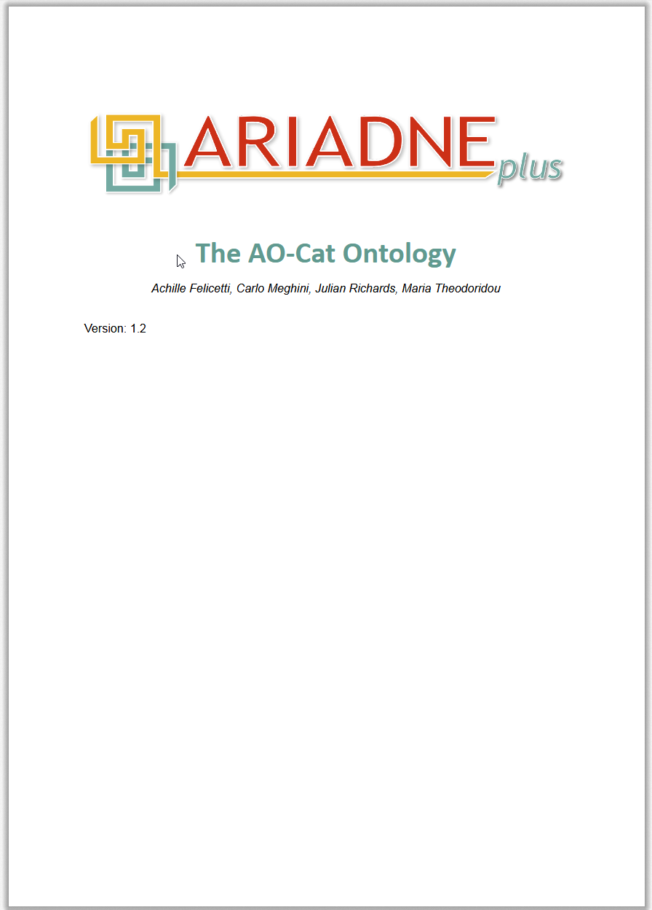

ARIADNE & Linked Open Data
Outline
- ARIADNE Portal
- Linked Open Data
- Triples – building blocks of LOD
- RDF – way of representing LOD
- ARIADNE AO-Cat ontology
ARIADNE
Archaeological data and the ARIADNE Portal
ARIADNE
A figure in Greek mythology
- Cretan princess, daughter of King Minos.
- Known for helping Theseus escape from the labyrinth after he kills Minotaur.

Egisto Sani, CC BY-SA 4.0 https://creativecommons.org/licenses/by-sa/4.0, via Wikimedia Commons
A research infrastructure
- An acronym for Advanced Research Infrastructure for Archaeological Dataset Networking In Europe.
- ARIADNE aggregates, integrates, and provides access to various archaeological data resources.
https://www.ariadne-research-infrastructure.eu/

ARIADNE Portal
Exercise
- How many resources are there in the ARIADNE Portal?
- How many records of individual artefacts are there?
- Who contributes the most of the records on artefacts?
- How many swords are there?
- How many Bronze Age swords are there?
- Are there any records from Brno (Czech Republic)?
- How many records are there from Africa?
What, where & when
Where
- Geolocations of places (points, polygons, bounding boxes)
When
- PeriodO gazeteer (https://perio.do/) – maps periods to absolute dates on a common time scale.
- Date
What
- Getty Art & Architecture Thesaurus
(Getty AAT, https://www.getty.edu/research/tools/vocabularies/aat/)
Linked Open Data
From ARIADNE Portal to ARIADNE Knowledge Base
Let’s discuss…
- What is data?
- What is structured data?
- What is unstructured data?
- What is a database?
- What is a relational database?
- What makes data open?
- What makes data linked?
- Have you ever collected/created any data?
- Have you ever created a database?
- Have you ever filled in a database designed by someone else?
Linked Open Data
(LOD)

Linked Open Data
What makes it linked and open?
Semantic Web / Web of Data
Semantic Web is an extension of the Web of documents to the Web of data. It is about creating links between documents, datasets etc. that are understandable and readable to both humans and machines. Linked Open Data is at the core of the Semantic Web providing tools and best practices to make these links.
- Open license.
- Uniform Resource Identifiers (URIs) name and identify individual things.
- URIs are resolvable using
http://(orhttps://) protocol
(it is possible to find information about the things). - URIs lead to useful information (data in RDF or SPARQL standards).
- URIs in the resources lead to other resources, so more things can be discovered following the links.
URLs, URIs & IRIs
URL (Uniform Resource Locator) – locates and allows retrieval of things on the Web.
URN (Universal Resource Name) – identifies but does not locate.
URI (Uniform Resource Identifier, formerly Universal Resource Identifier) – identifies (both abstract or physical) things (resources) in the Web.
IRI (Internationalized Resource identifier) – same as URI, allows wider range of characters to accomodate various writing systems.
Linked Open Data Cloud
LOD knowledge bases:
https://www.wikidata.org/
~12,5 billion triples
http://dbpedia.org/
~9,5 billion triples

The Linked Open Data Cloud from lod-cloud.net (2024-07-04)
Example – URIs
- Ariadne is a figure in Greek mythology.
- ARIADNE is a project acronym.
- Ariadne was a Byzantine empress.
- Ariadne is a genus of butterflies.
- Ariadne is a drug…
Far too many things are called Ariadne!
We need unique identifiers!
Wikidata
Identifier: Q184874
DBpedia
- http://dbpedia.org/resource/Ariadne (URI)
- http://dbpedia.org/data/Ariadne (data in RDF)
- http://dbpedia.org/page/Ariadne (landing page)
Egisto Sani, CC BY-SA 4.0 https://creativecommons.org/licenses/by-sa/4.0, via Wikimedia Commons
Triples
How to represent LOD?
Example – triples
- Ariadne is a figure in Greek mythology.
Example – triples
- Ariadne is a figure in Greek mythology.
- Ariadne is from Crete.
- Crete is an island.
Example – triples
- URIs in place of subjects and objects
Example – triples
- URIs in place of subjects and objects
- Abbreviated URIs
dbo: http://dbpedia.org/ontology/
dbr: http://dbpedia.org/resource/
gn: http://sws.geonames.org/
Example – triples
- URIs in place of predicates (properties)
dbo: http://dbpedia.org/ontology/
dbr: http://dbpedia.org/resource/
gn: https://sws.geonames.org/
rdf: http://www.w3.org/1999/02/22-rdf-syntax-ns#
owl: http://www.w3.org/2002/07/owl#
Example – RDF
- We can write down the triples using full URIs.
- Each triple ends with a period (
.)
<http://dbpedia.org/resource/Ariadne>
<http://www.w3.org/2000/01/rdf-schema#label>
"Ariadne"@en .
<http://dbpedia.org/resource/Ariadne>
<http://www.w3.org/1999/02/22-rdf-syntax-ns#type>
<http://dbpedia.org/ontology/MythologicalFigure> .
<http://dbpedia.org/resource/Ariadne>
<http://dbpedia.org/ontology/origin>
<http://dbpedia.org/resource/Crete> .
<http://dbpedia.org/resource/Crete>
<http://www.w3.org/1999/02/22-rdf-syntax-ns#type>
<http://dbpedia.org/ontology/Island> .
<http://dbpedia.org/resource/Crete>
<http://www.w3.org/2002/07/owl#sameAs>
<https://sws.geonames.org/258763> .- This is perfectly fine for the machine, not so much for the human.
Example – RDF
- To make the notation more readable, let’s abbreviate the URIs by defining prefixes.
@prefix rdf: <http://www.w3.org/1999/02/22-rdf-syntax-ns#> .
@prefix rdfs: <http://www.w3.org/2000/01/rdf-schema#> .
@prefix owl: <http://www.w3.org/2002/07/owl#> .
@prefix dbo: <http://dbpedia.org/ontology/> .
@prefix dbr: <http://dbpedia.org/resource/> .
dbr:Ariadne rdfs:label "Ariadne"@en .
dbr:Ariadne rdf:type dbo:MythologicalFigure .
dbr:Ariadne dbo:origin dbr:Crete .
dbr:Crete rdf:type dbo:Island .
dbr:Crete owl:sameAs <https://sws.geonames.org/258763> .- There is still a lot of repetition, e.g. in the subjects.
Example – RDF
- To remove repetition, we add different predicates and objects to the same subject using semicolon (
;) - The set of triples still ends with a period (
.)
@prefix rdf: <http://www.w3.org/1999/02/22-rdf-syntax-ns#> .
@prefix rdfs: <http://www.w3.org/2000/01/rdf-schema#> .
@prefix owl: <http://www.w3.org/2002/07/owl#> .
@prefix dbo: <http://dbpedia.org/ontology/> .
@prefix dbr: <http://dbpedia.org/resource/> .
dbr:Ariadne
rdfs:label "Ariadne"@en ;
rdf:type dbo:MythologicalFigure ;
dbo:origin dbr:Crete .
dbr:Crete
rdf:type dbo:Island ;
owl:sameAs <https://sws.geonames.org/258763> .- This is a Turtle serialization of an RDF, one of common ways of representing LOD.
RDF
Resource Description Framework
- A standard for LOD defined by the World Wide Web Consortium (W3C).
- RDF is a data model that describes how data is structured.
- Uses triples to represent statements.
- RDF does not exactly tell us how to write the triples.
- Numerous serializations (how to write things down) of RDF exist.
https://www.w3.org/standards/techs/rdf
RDF serializations
- Turtle (subset of Notation3 language, superset of N-Triples format)
- RDF/XML
- JSON-LD
and many more…
RDF converter: https://www.easyrdf.org/converter
Turtle
- Stands for Terse RDF Triple Language.
- File extension
.ttl. - Triple ends with a period.
- URIs in angle brackets (
<,>). - Literal (text or other value) in quotation marks (
"). - Triples with a same subject are divided with semicolon (
;). - Triples with a same subject and property are divided with comma (
,).
@prefix rdf: <http://www.w3.org/1999/02/22-rdf-syntax-ns#> .
@prefix rdfs: <http://www.w3.org/2000/01/rdf-schema#> .
@prefix owl: <http://www.w3.org/2002/07/owl#> .
@prefix dbo: <http://dbpedia.org/ontology/> .
@prefix dbr: <http://dbpedia.org/resource/> .
dbr:Ariadne
rdfs:label "Ariadne"@en ;
rdf:type dbo:MythologicalFigure ;
dbo:origin dbr:Crete .
dbr:Crete
rdf:type dbo:Island ;
owl:sameAs <https://sws.geonames.org/258763> .RDF can contain…
- URIs/IRIs:
- written in angle brackets
<http://www.w3.org/1999/02/22-rdf-syntax-ns#> - shortened as prefixes
@prefix rdf: <http://www.w3.org/1999/02/22-rdf-syntax-ns#>
- written in angle brackets
- Literals (values):
- written in quotes followed by their datatype URI (typed literals)
- list of RDF datatypes: https://www.w3.org/TR/rdf11-concepts/#section-Datatypes
- strings (datatype
xsd:stringcan be omitted)
"Ariadne"^^xsd:stringis the same as"Ariadne" - numbers (quotes can be omitted)
"3.14"^^xsd:decimalis the same as3.14 - dates
"2024-09-17"^^xsd:date
RDF/XML
- File extension
.rdf. - W3C standard (https://www.w3.org/TR/rdf-syntax-grammar/).
<?xml version="1.0" encoding="utf-8" ?>
<rdf:RDF xmlns:rdf="http://www.w3.org/1999/02/22-rdf-syntax-ns#"
xmlns:rdfs="http://www.w3.org/2000/01/rdf-schema#"
xmlns:owl="http://www.w3.org/2002/07/owl#"
xmlns:dbo="http://dbpedia.org/ontology/">
<rdf:Description rdf:about="http://dbpedia.org/resource/Ariadne">
<rdfs:label xml:lang="en">Ariadne</rdfs:label>
<rdf:type rdf:resource="http://dbpedia.org/ontology/MythologicalFigure"/>
<dbo:origin>
<dbo:Island rdf:about="http://dbpedia.org/resource/Crete">
<owl:sameAs rdf:resource="https://sws.geonames.org/258763"/>
</dbo:Island>
</dbo:origin>
</rdf:Description>
</rdf:RDF>Tabular data vs triples
- Any data organized in a table can be written as triples.
For example a table like this:
| ID | human | source | delta15N | delta13C |
|---|---|---|---|---|
| sample01 | TRUE | coll | 6.9 | -19.2 |
| sample02 | FALSE | coll | 4.2 | -21.83 |
| … | … | … | … | … |
| sample42 | NA | coll | 12.02 | NA |
Can become this:
| subject | predicate | object |
|---|---|---|
| sample01 | fromHuman | TRUE |
| sample01 | source | coll |
| sample01 | delta15N | 6.9 |
| sample01 | delta13C | -19.2 |
| sample02 | fromHuman | FALSE |
| … | … | … |
| sample42 | delta13C | NA |
- Observation (row) IDs become subjects.
- Observations (values) become objects.
- Variable (column) names become predicates.
Exercise
Serialize the statements in this diagram as Turtle RDF using DBpedia
Prefixes:
rdf: http://www.w3.org/1999/02/22-rdf-syntax-ns# .
xsd: <http://www.w3.org/2001/XMLSchema#> .
owl: http://www.w3.org/2002/07/owl# .
dbo: http://dbpedia.org/ontology/ .
dbr: http://dbpedia.org/resource/ .
dbp: http://dbpedia.org/property/ .
gn: http://sws.geonames.org/ .
Solution
@prefix rdf: <http://www.w3.org/1999/02/22-rdf-syntax-ns#> .
@prefix xsd: <http://www.w3.org/2001/XMLSchema#> .
@prefix owl: <http://www.w3.org/2002/07/owl#> .
@prefix dbo: <http://dbpedia.org/ontology/> .
@prefix dbr: <http://dbpedia.org/resource/> .
@prefix dbp: <http://dbpedia.org/property/> .
@prefix gn: <http://sws.geonames.org/> .
dbr:Phaistos_Disc
rdf:type dbr:Artifact_(archaeology) ;
dbp:discoveredDate "1908-07-03"^^xsd:date ;
dbp:discoveredPlace dbr:Crete .
dbr:Crete
rdf:type dbo:Island ;
owl:sameAs gn:258763 .Why is LOD useful?
Let’s brainstorm…
AO-Cat Ontology
Ontologies and the Semantic Web
What is an ontology?
- An explicit, formal way of modelling relationships between information within a particular domain.
- An abstraction allowing formal representation of particular knowledge about the world.
- Ontologies provide precisely defined vocabularies for modelling relationships.
What is in an ontology?
- Classes – ontology defines abstract groups, fundamental categories of objects or concepts within a domain.
- Relationships (properties) – ontology limits what kinds of subjects and objects can properties link and how classes are related.
- Instances of objects – what are the described individuals.
Why is this useful?
- Logic
- Automated reasoning
- Interoperability and data integration
Domain and range
- Domain – subject described by the property is in the class specified by the domain.
- Range – object of the statement has the given range.
rdfs:domain and rdfs:range properties
Example
@prefix rdf: <http://www.w3.org/1999/02/22-rdf-syntax-ns#> .
@prefix rdfs: <http://www.w3.org/2000/01/rdf-schema#> .
@prefix schema: <http://schema.org/> .
@prefix dbo: <http://dbpedia.org/ontology/> .
@prefix dbr: <http://dbpedia.org/resource/> .
dbo:MythologicalFigure rdfs:subClassOf dbo:Person .
dbo:origin rdf:type rdf:Property ;
rdfs:domain dbo:Person ;
rdfs:range dbo:PopulatedPlace .
dbr:Ariadne
rdf:type dbo:MythologicalFigure ;
dbo:origin dbr:Crete .
dbr:Crete
rdf:type dbo:PopulatedPlace .AO-Cat Ontology
Felicetti A., Meghini C., Richards J., Theodoridou M. 2023: The AO-Cat Ontology. doi:10.5281/zenodo.7818374.

- Application profile of CIDOC CRM (most of the classes are mapped to CRM).
- Namespace IRI:
https://ariadne-infrastructure.eu/aocat/ - Classes prefixed with
AO_
Defines:
- 22 classes
- 66 properties
AO-Cat Concepts
Resources
AO-Cat classes
Where
AO_Spatial_RegionAO_Spatial_Region_PointAO_Spatial_Region_PolygonAO_Spatial_Region_BBoxAO_Spatial_Region_StdName
When
AO_Temporal_Region- From/until given in years
- PeriodO URIs
What
- class
AO_Concept - ARIADNE subjects (property
has_ARIADNE_subject) - derived subjects (AAT subjects, property
has_derived_subject) - native subjects (property
has_native_subject)
ARIADNE subjects
- Site/monument – each record is a site/monument.
- Fieldwork – each record is an individual archaeological investigation (event) .
- Fieldwork report – record of fieldwork event (link to grey literature report).
- Fieldwork archive – record of filedwork event (link to archive of digital objects).
- Scientific analysis – any analytical data.
- Date – each record is a single archaeological date (C14, dendrochronology etc.)
- Artefact – each record is a single artefact (except coins).
- Coin – each record is a single coin.
- Building survey – specific category of fieldwork report or archive for standing building survey.
- Maritime – specific category of site/monument for wrecks or fieldwork event (underwater archaeology).
- Inscription – monuments or artefacts that bear graphical manifestation of a human thought.
- Rock art – similar to inscriptions.
- Burial – each record is a burial.